Konvertilo

Tipara Grandeco:
-
12
14
18
+
Uzu juliamo tiparon
Kiel vi nomiĝas? Mi ŝatas lerni lingvojn. Ĉu vi povas paroli la anglan lingvon? Adiaŭ, vidu vin la venonta ĵaŭdo!
Konvertu ASCII alfabeton al Esperanto alfabeto (ch → ĉ)
Konvertu Esperantan alfabeton al ASCII alfabeto (ĉ → ch)
Katakanigo (ĉa → チャ, neinversigebla)
Alfabeto
c
ĉ
g
ĝ
h
ĥ
j
ĵ
s
ŝ
u
ŭ
Prononco
[ts]
[tʃ]
[g]
[dʒ]
[h]
[x]
[j]
[ʒ]
[s]
[ʃ]
[u]
[w]